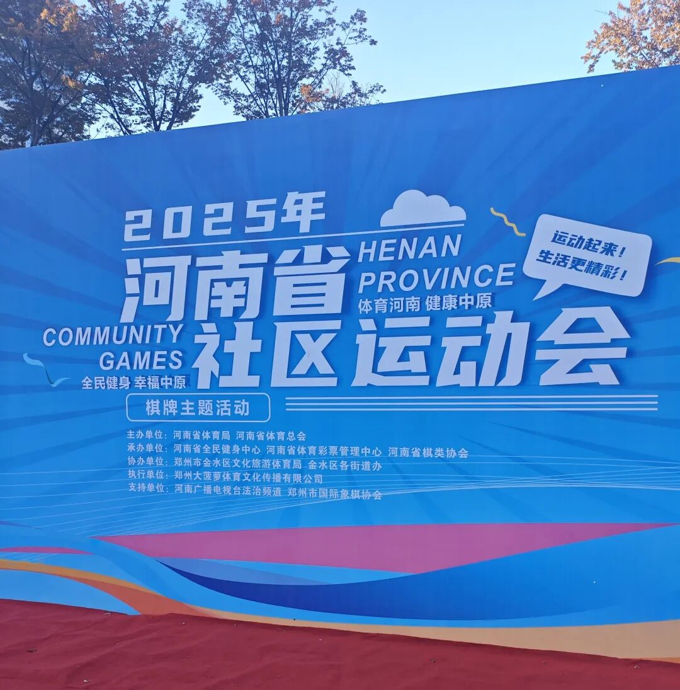
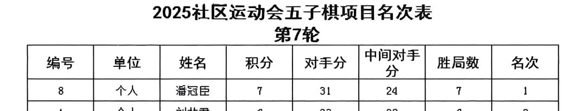
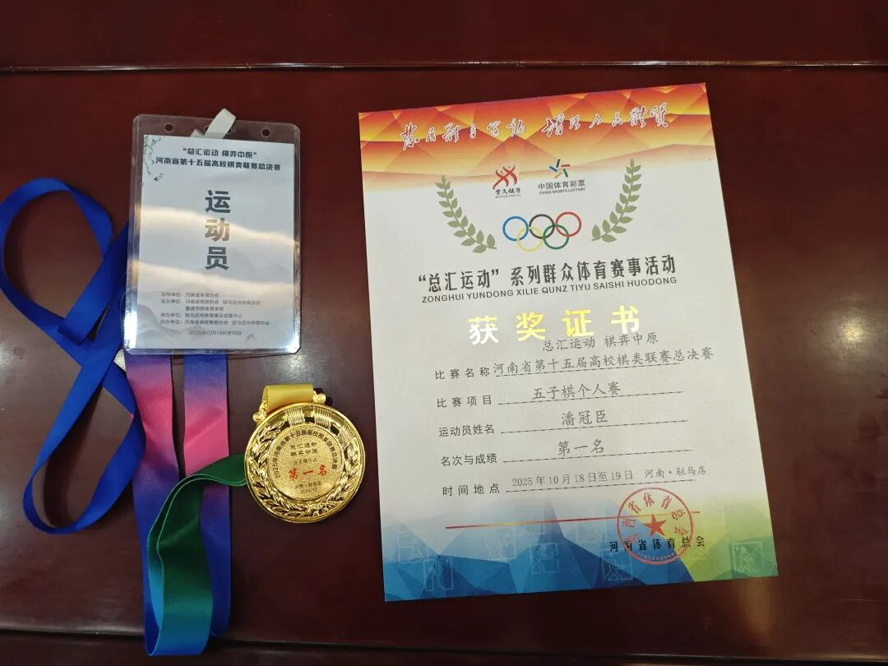
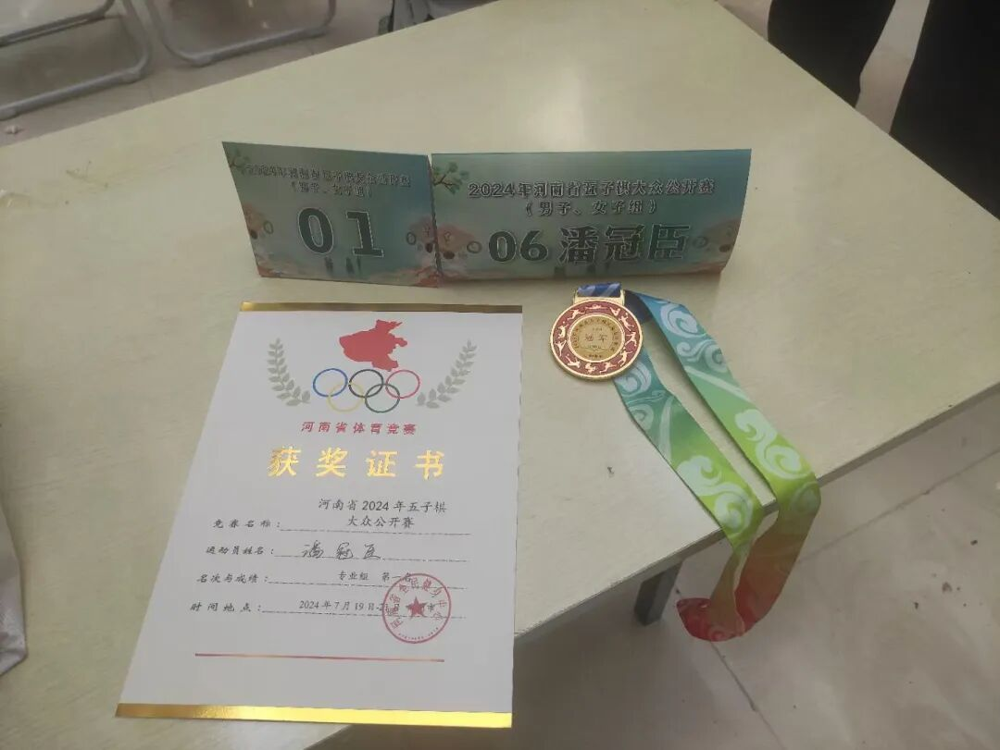
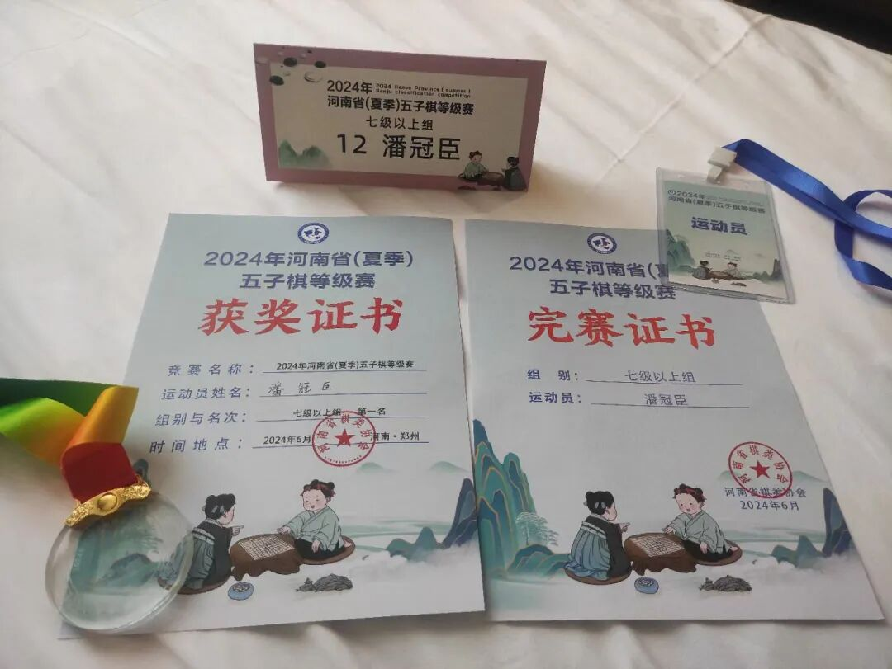
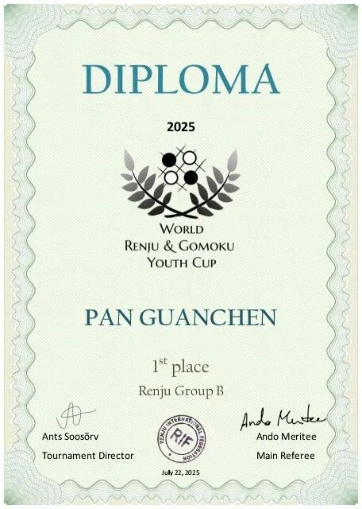
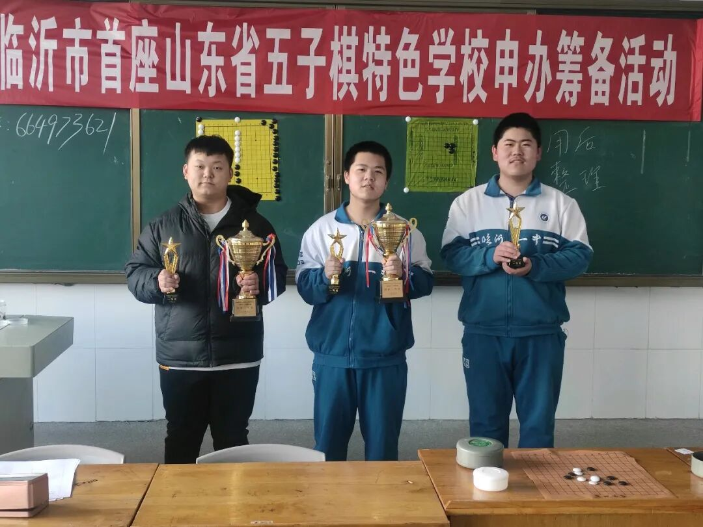
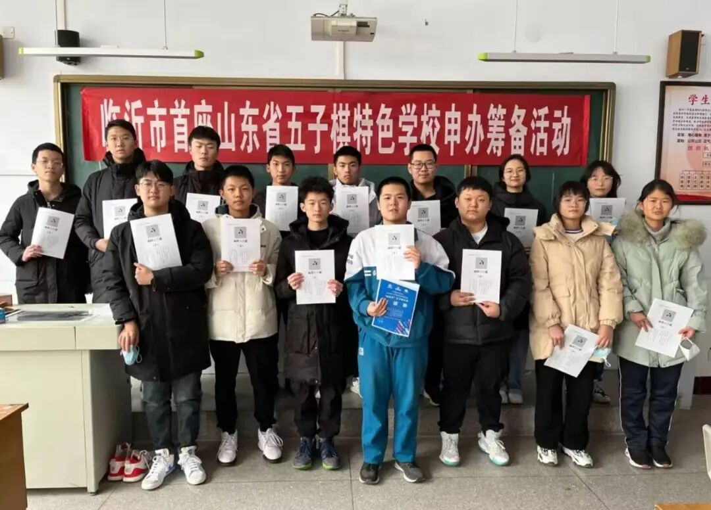
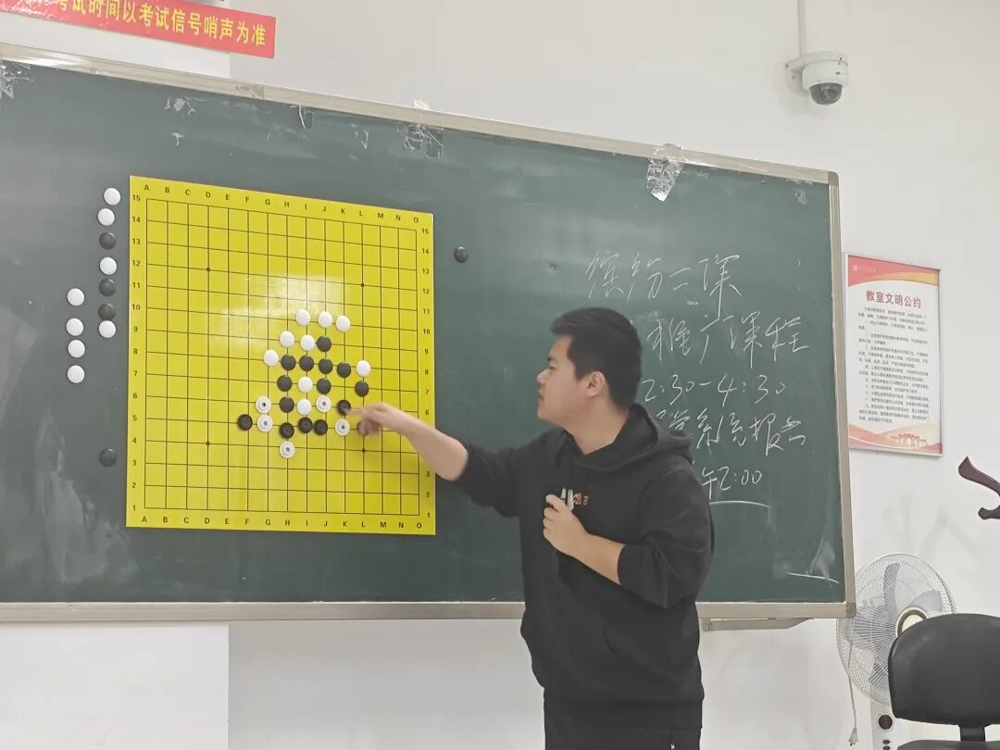
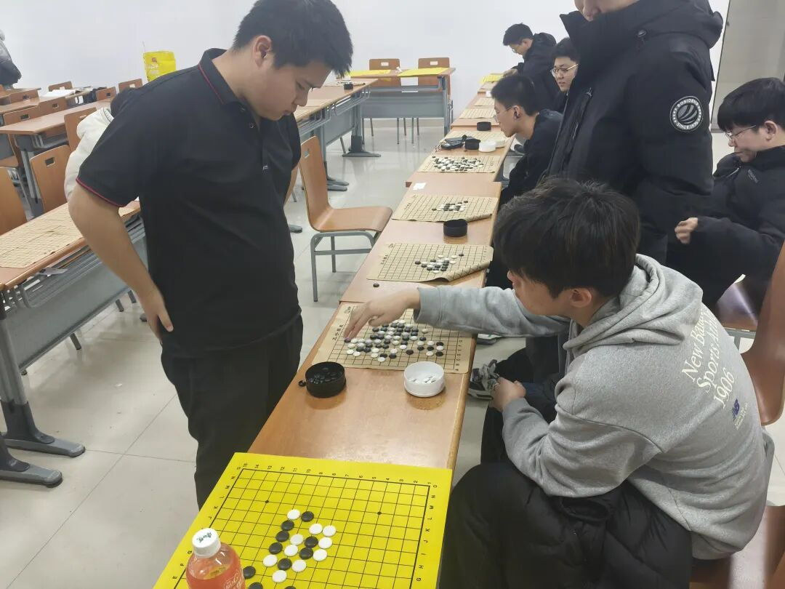

2025五子棋闲谈｜冠军反对冠军
请把我在路上叫醒
(本文本应在11月1日的那一周发布，然当时并未完篇，故现在整体更新，完善后发出)
2025年11月1日，河南省社区运动会五子棋比赛在郑州市金水区市民中心举行。比赛采用无禁单盘制，我再次以七轮全胜的成绩在昔日多次交锋的青训，优秀大学生和众多社区居民中获得冠军，在无禁手五子棋中首次取得重大突破......


然而这不是阐述的重点。这不曾是我们想要的生命。
冠军正在反对着冠军。
一
何为“冠军反对冠军”?事实上是一个近乎超载的借题发挥。三十余年前的一位学者，现在他被一些好事之徒称为中国的国师。他的著作《美国反对美国》，鞭辟入里地展现了美国的冰山一角。如今先进的冠军义正言辞地反对着过去腐朽的冠军，实际上也华丽地完成了我们个人之完善与更新。起起落落的踉跄蹉跎当中，五花八门的冠军妙手得之似乎如探囊取物，其数量业已不能靠健实的两手仓促数出，自然地，以往自惭形秽的冠军业已被如今名副其实的冠军所反对。有人要望尘莫及，因为他们思想的许多思想常常沦为空虚的幻想。而你仍然带着曼舞悲鸣的青鸟，坚定不移地保持着那种纯真的自信。那就让我们继续大步流星地走在这条自由之路上，愉快地放着AC/DC，用眼中闪烁的星星欣赏你那迷醉的经历。
所以，朋友，别忘了。这次千万别忘了，也请把我在路上叫醒。

二
山东省冠?河南省冠?南山河的全部，这东西二省算是辉煌的半壁江山。然而江山没那么秀丽，即便涵盖那北山河的两省，省依然是省，肯定的结束，否定的开始。然而在第一阶段与第二阶段即将过渡之时，如何发觉第三阶段的曙光?肯定，初步的了解与控制，最初无畏的期盼；否定，反对了那种腐朽的水平，有利于完善。然而强度止步于此，欲求否定之否定者，时代愈推波助澜，需勇敢地接受号召，继续做巨人；然而有人却瞠目结舌，颠沛流离过后不稂不莠，巨人摇身一变成为巨人观，一败涂地后相忘如陌。要切记，棋的一些机会不以人的意志为转移。众人皆观艰难爬行的伟大勇士粉身碎骨，身为多届省冠勤学勤省，既做省冠也为“省”冠，最终在潜心磨砺的涡轮增压后省有所成，省出风采，在更高的舞台书写了浓墨重彩的一笔。然绝大部分行者茫然若失后将自己融入那失落成行的历史匆匆滑过地燃烧着人群的河流，自豪地共享着那份摇摇欲坠的破败灯塔。剩余的爱好者满载屡败屡战的倔强与五十步者的讥讽奔向极地。所有的痛终有一天都将远去，现在毋宁让我们带着那份荣辱广告牌，适观往昔信仰的熠熠生辉，走向这条自由之路。

三
恍惚间，我们听到几年前的北方八百里马男孩沸腾着无畏而不羁的青春接受我们的邀请踏入比赛场地，期待着世界冠军的归属并永久逃离了没有存在的教室。无人知晓在现实或未来这是否是他想要的生活，也许有一种无名的踏实是生活在树上。化学大师关闭了自欺欺人的完美把式，带着未曾无力的信仰幸运夺魁并相忘如陌于人海之中，如今只剩过客的霓虹灯与一锤子买卖的羞涩变招在街边闪烁。而我们也曾触及过那些别具一格的小城，在摇曳的水柳中给那些孤独的朋友们唱些快乐而平凡的歌谣，抚慰那些被困苦摆布却永不低头的企求。或许在这的每一个人都羡慕你那走走停停中带着坎坷并永远眷念的辉煌经历，每一个人也都想有这段游荡漂泊但热烈磅礴的生命。朋友，不如就让我们继续去吧。很久以前，我就走向了这条自由之路。

四
走在这条路上，有时不免陷入困倦的时刻。朋友，无论什么时间，自讨苦吃和没苦硬吃理应避免，但居安思危的精神最好不要忘却。倘若没有谦逊进取的态度，少为做功，早晚炸弹会从未知的荒岭上，璀璨而寂寞的绽放。作为后代，我们偷懒和取巧地有些过为已甚。这样盲目的冲刺下去，终有一天在某次比较重要的攸关时刻，悄无声息地睡下，先前那种在风中破碎又重塑的勇气，那种放逐在天际的自由又烂漫的信仰，还能留下多少呢？或许下次前行时依然会倒下，但我们也从没接受命运的摆布。所有在这条路上的人也未曾被不甘击溃或凋零。需要的是继续走并继续失去的头脑以及脚踏实地的持之以恒。慢慢来。路还长。
做好部分定约，然后从3NT开始，带着消散于胸口的峥嵘蝶舞潇洒进局，然后探求那些4X，5x，6阶与7阶的定约吧。
在未加倍的情况下，该定约是进局的最低限度
在13墩牌中赢得9墩及以上即可达成定约

五
带着谜一样生活的苦行者浪迹天涯，伴着轰隆隆的音乐奔向神秘而光明的远方。或许那里有可取用的一切冷门变化与高超计算，周遭有如同狮子般潇洒的月光反射着，熠熠生辉却茫然若失，轸恤地观看着人们注定的痴狂命运。这是遍体鳞伤的城市之光?也可能是沉默骄傲的灯塔。或许你在夺冠的路上睡着了。一个冠军，又一个冠军，再一个冠军，迟早失去方向，迟早变得麻木。需要多少个冠军才能变得清醒?至少有十个冠军给你安慰。可现在，朋友，在这布满苔藓和薄雾的路上，务必把我叫醒。很久以前，我们就曾恣意放荡地不顾一切，在星河穿行的共舞中带着赤子般的骄傲走向这条康庄大道。确乎是不灭不羁，辉煌燃烧的荒草如此倔强又那样苍老。


六
别忘了来时带着阴霾的晚霞，将忘忧草放入我的行囊。别忘了掬一捧花一样的溪水，净润那早已泪流满面的魂灵。或许并没有谁真正留恋着四月洒满苦菊的河流，在飘扬呢喃的花水间意外发现酣睡的光之少年。野风荡起，棋子孤独而破碎的飞溅，形成一片片棋形，八卦与剑影在风车轮滑翔的梅花飞燕中旁逸斜出，确乎引人入胜。这周围的一切定式都会让你困惑，你所拥有的一切冠军正在毁灭着你事半功倍的付出。那些你从未需要的那些细枝末节的变化，填满了你空空如也的胸膛。漠然或谎骗?或许需要绽放一把真理之火，敦促匆匆忙忙过路的人群翩然起舞。可你深知你是个从未潜心钻研过任何高精端的家伙，只不过是恰巧不求甚解的小人得志，窃居高位的神秘大师。如同穿着崭新破衣裳上却进行华美而卑微的倒立之楼群，似乎高高在上剑指蓝天，又近飘渺孤鸿无处安放。所有人都听到叮叮当当的熟睡心声。或许下一次醒来时，未尝胜绩的后进者依然在醉生梦死的皮囊背后藏匿着满目疮痍的悲凉，朋友，不如我们相互告慰和拥抱，无论是抚慰还是温暖，希望我们能继续不顾一切，走上这条快活之路。

12月6日，河南师范大学第二次棋类推广课程
已在临沂、郑州、洛阳、新乡线下授过课
七
朋友，这次千万别忘了，把我在路上叫醒。忝列在排行大榜的腐朽冠军正在被先进的冠军所忘记。先进的一切反对着落后的一切，正如现在这般，冠军在反对着冠军。这可能是一种抛弃，但更多的是一种唤醒。披头士电台之声再次失迷于南山河。
就这样。留下一纸文字在世坊间疏离。把那酣睡的少年叫醒，至于靡痛与空惘，毋宁共同欣赏这神秘之路，走上便是无尽。享受塔拉山口的乐趣吧！但现实往往是求其次的两打。希望我们镂空那定式的雕花，破碎那嬉皮士与皮条客的皮质荷尔蒙。让我们载着游行的花车，做着和士兵同样的游戏。不知唱过多少大谱的旋律和诗篇，只知道每次翻译时都难免纰漏；也不知挨过多少冷眼与嘲笑，思想的许多思想融会贯通，成就了一个可怜的梁上君子。可记得每次我们都会对朋友说，没关系，一切都会更好。去吧！朋友！去吧。只是这次，别忘了，在路上，把我叫醒。很久以前，我们就曾勇往直前地，踏向这条未来之路。

12月14日，河南师范大学棋类推广活动1vs22车轮战
原定总活动时间40分钟，最终耗时2小时结束
采用五手两打规则，侥幸全得
八
让我们继续践行那包含所有荒谬与疯狂的没有结局之展示，在熟睡的道路上被叫醒。让我们把充满倦意的冠军扔到火堆里，删掉那些无谓的奖励，准备着，激荡着，拥抱下一个先进的冠军可能吧。朋友，这次别再忘了，把我叫醒！